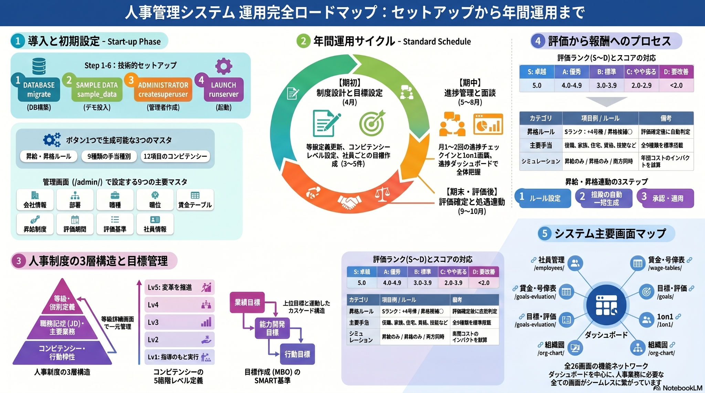

⏱
時間の短縮
数ヶ月〜半年かかる制度設計を、AIとの対話により短期間で試作・改善できる形にしました。
等級制度・目標管理・1on1・人事評価・昇給昇格・賃金シミュレーションまで、AIとの対話で実用レベルの人事管理システムを構築した実践事例です。

本ページは、製品販売ページではなく、AI活用委員会に対して「社労士業務におけるAI活用の具体例」を共有するための参考事例ページです。
制度設計だけでなく、目標・評価・処遇まで連動するWebアプリを構築。
プログラミングから始めず、社労士の業務知識をAIに伝えて実装。
AIが社労士の仕事を奪うのではなく、専門知識を実装可能な形に拡張。
就業規則チェック、助成金診断、労務DD、外国人雇用診断にも展開可能。
従来の人事制度構築は、等級定義・賃金表・評価制度の設計に時間がかかり、外部コンサル費用も高額になりやすい上、Excel管理の限界がありました。本事例は、その課題に対して「制度設計」と「運用システム」を一体で構築したものです。
数ヶ月〜半年かかる制度設計を、AIとの対話により短期間で試作・改善できる形にしました。
等級・目標・評価・賃金を、資料だけでなくブラウザで操作できる26画面のシステムに連動。
AIが実装を担い、社労士は制度思想・評価基準・法令適合・説明責任を担う構成です。
等級制度、MBO、1on1、人事評価、昇給・昇格、賃金テーブルを一気通貫で扱う構成です。
ポイントは、AIに「コードを書かせる」ことではなく、社労士が現場の制度要件を言語化し、AIに実装させることです。
目標管理、賃金テーブル、等級要件などを業務言語で指示。
モデル設計、コード生成、画面作成、テスト、修正を実行。
制度として妥当か、運用に耐えるか、社労士目線で調整。
資料・動画・音声・ZIPをLPに統合し、委員会で確認可能に。
セットアップ、初期マスタ、年間運用、評価から報酬連動、主要画面マップまでを1枚で示したロードマップです。
人事制度を作って終わりにせず、年間のPDCAとして回すための業務フローをシステムに落とし込んでいます。
本LPの中心資料として、セットアップ、初期設定、年間運用サイクル、等級制度、目標管理、1on1、人事評価、昇給・昇格連動、賃金テーブル・手当・シミュレーション、画面一覧までを体系的にまとめた運用ガイドを独立セクションとして掲載します。
単なる構想資料ではなく、実際に人事管理システムを起動し、初期設定し、年間の人事評価・処遇反映まで運用するための実務手順書です。AIで作ったものを「どう現場で使うか」まで示せるため、全社連AI活用委員会への参考事例として説得力を高めます。
LP内でそのまま閲覧できます
PDFはLP内で閲覧、動画・音声はその場で再生、運用ガイドPDF・Wordガイド・システムZIPはダウンロードできます。GitHub Pagesには、下記ファイルをすべて同じ階層に配置してください。
社労士×AIによる人事制度構築の事例報告
セットアップから年間運用までの図解資料
評価・処遇決定制度の構造化資料
制度の背景や、評価と昇給の仕組みを、資料だけでなくメディアでも補足できます。
人事制度をキャリア設計・目標管理とつなげて説明するための補助動画です。
評価と昇給・昇格連動の仕組みを音声で確認できます。
この手順は、委員会内で実際にZIPを展開して動作確認する場合の補足情報です。LPの主目的はあくまで参考事例の共有です。
python --version
pip install django
python manage.py migrate
python load_sample_data.py
python manage.py createsuperuser
python manage.py runserver
このLPは、社労士業務におけるAI活用を「何ができるのか」「どこまで実装できるのか」「専門家の役割はどう変わるのか」という観点で共有するための参考事例です。
参考資料を確認する